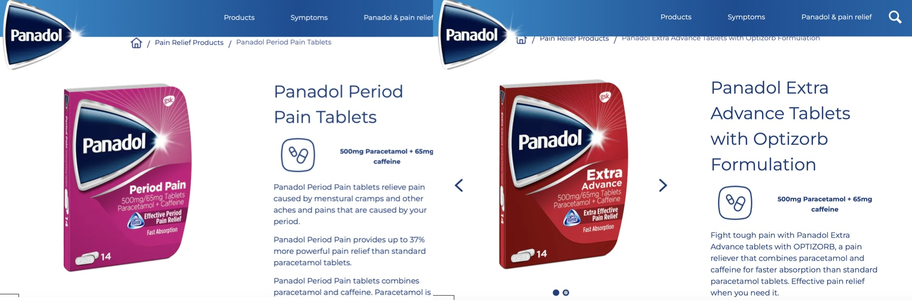

I believe there are few people who have not stumbled over the frequent news around period product testing and research.
But, in case you are not yet aware:
-
Tampons and pads have not been tested with blood until 2023:
I don’t think it takes much knowledge on periods to understand that the consistency And for the non-period-havers out there. Period blood is not just blood. It clots and it flushes out discharge. And - surprise, surprise - this does not soak into a piece of cotton and synthetic like saline solution does. So, that lasts you all-night bullshit was not solely overconfidence in marketing, it was the actual research that let us down.
Thompson, J. (2023). "No One Studied Menstrual Product Absorbency Realistically until Now". Scientific American -
Toxic tampons:
A team of researchers in found that there are toxic chemicals like arsenic and lead in many tampon brands. And as a variety of Crime and Medical films have taught us, the mucosa, a soft skin tissue, absorbs substances very efficiently. Yet, even though almost half of the population menstruate, and the health concerns this raises, including dementia, cancer, kidney, liver and brain damage and more anxiety-inducing words, there has been close to no research, and even less push-back against this.
Proulx, E. (2024). "First study to measure toxic metals in tampons shows arsenic and lead, among other contaminants". Berkeley Public Health -
How is period poverty still a thing?
64% of Australians with periods have struggled to pay for period products. Let that sink in! 64%, that is the same percentage of American adults using social media. That is about the percentage of Germans that separate their waste (And Germans love separating their waste). Come on period product accessibility! It is 2024 - time to woman up, and make this shit happen!
Connory, J. (2024). "Bloody big survey 2024 - Australia's largest body of data on menstruation. ". share the dignity -
Pink pain killers:
And on the topic of period poverty: Several pharmaceutics companies, I won’t point any fingers (Nurofen, Panadol) launched pain killers marketed as period pain-specific. The special ingredient? The bright pink packaging and occasionally even a higher price!
Savin, J. (2019). "Turns out, most period painkillers are the same as normal ones". Cosmopolitan 
Bloody f**king hell!
06.08.24
Laetitia Stuchtey